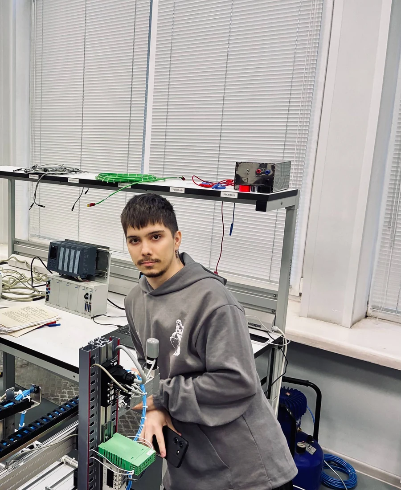
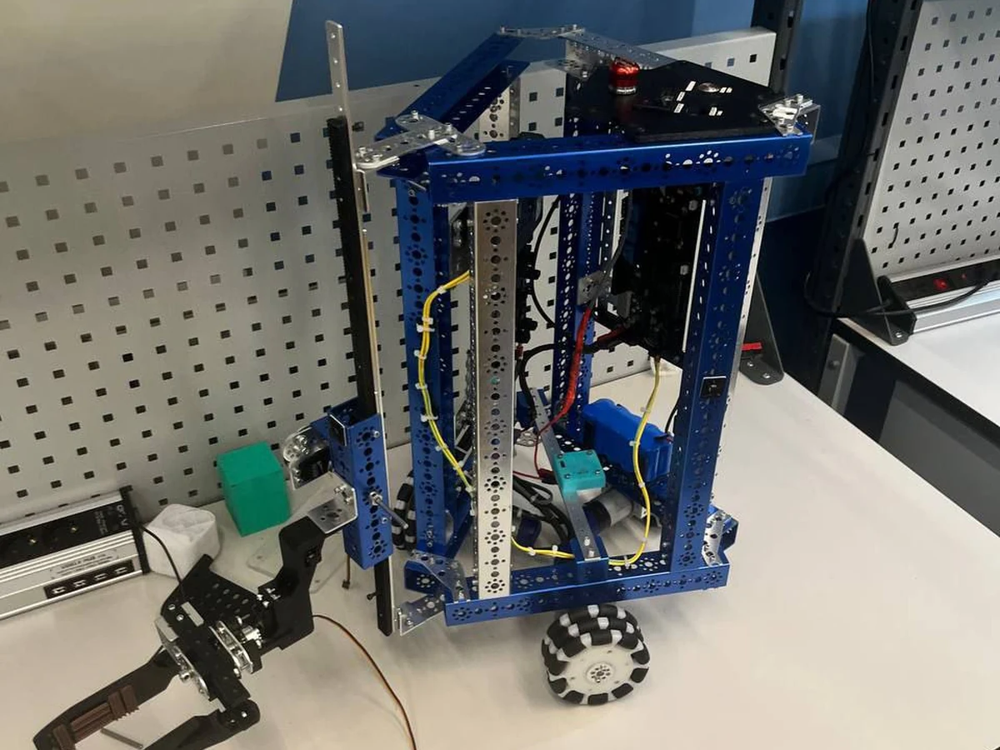
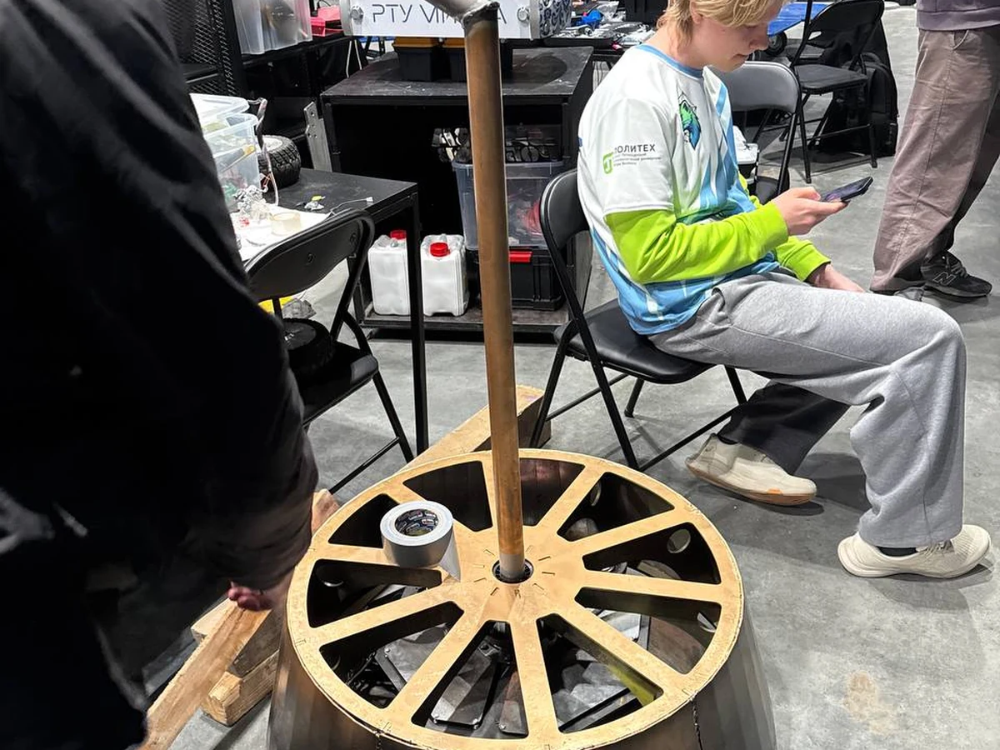
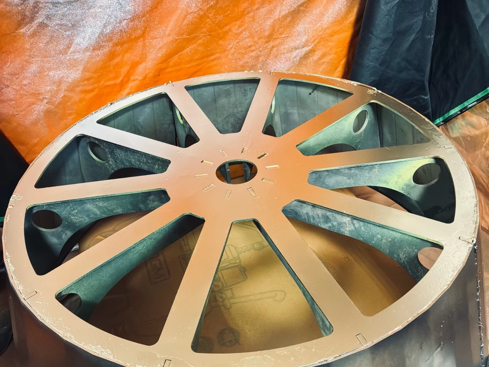
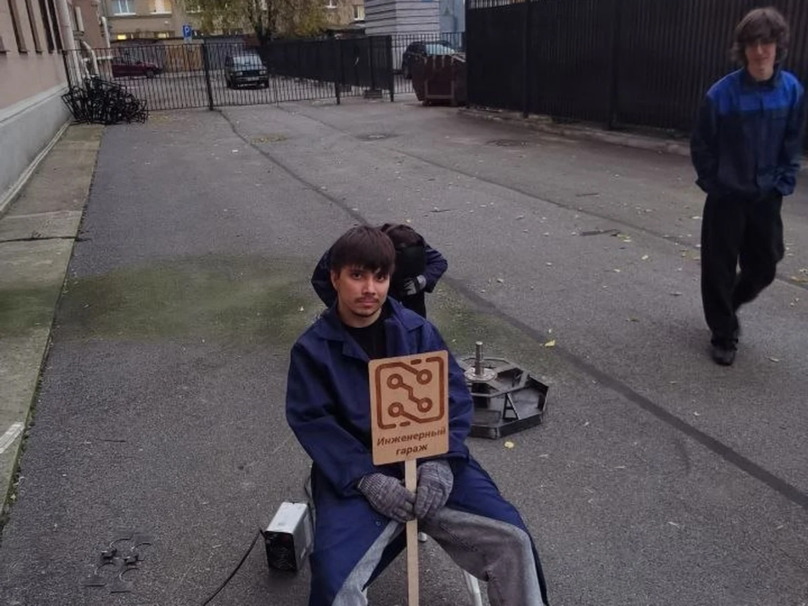

Образование
СПБ ГБПОУ «АИТУ»
Направление: «Мехатроника и мобильная робототехника»
Портфолио / Мехатроника / Робототехника
Начинающий инженер-робототехник
Занимаюсь проектированием, сборкой, электромонтажом, наладкой и тестированием робототехнических и мехатронных систем. Мне интересны мобильные роботы, исполнительные механизмы, системы управления и полный производственный цикл — от идеи и компоновки до запуска и отладки.

Лабораторная и проектная работа: от схемы и механики до программирования и испытаний.
Обо мне
Я обучаюсь по направлению «Мехатроника и мобильная робототехника» в СПБ ГБПОУ «АИТУ» на факультете «Электроника и машиностроение». В учебных и производственных проектах я участвовал на всех этапах: подбирал и монтировал узлы, занимался электромонтажом, механической сборкой, программированием, пуско-наладкой и итоговым тестированием.
Во время практик и работы техником в ООО «СТЦ» получил опыт работы с мобильными роботами, мехатронными системами, контроллерами и инструментами. Мне нравится разбираться в устройстве системы целиком и доводить решение до рабочего состояния, а не только собирать отдельные части.
СПБ ГБПОУ «АИТУ»
Направление: «Мехатроника и мобильная робототехника»
Учебные и производственные практики по мобильным роботам и мехатронным системам.
Работа техником в ООО «СТЦ».
Ответственность, внимательность к деталям, стремление к развитию, логическое мышление и готовность доводить проект до результата.
Портфолио
Ниже — часть работ, в которых я участвовал на всех этапах: от подготовки конструкции и сборки до настройки, испытаний и демонстрации результата.

Компактная мобильная платформа с механическим захватом для отработки задач перемещения, захвата и базового автономного поведения. Я участвовал в проектировании конструкции, сборке рамы, монтаже компонентов, подключении исполнительных узлов и последующей отладке.
Мобильная робототехника
Проект робота для демонстрационного и соревновательного формата. В рамках работы занимался изготовлением элементов корпуса, сборкой силовой части, монтажом оборудования, подгонкой узлов, общим тестированием и подготовкой конструкции к эксплуатации.
Инженерный проект
Изготовление и доводка механической части, несущего корпуса и компоновочных элементов. Участвовал в производственном цикле от подготовки деталей и подгонки до сборки, проверки прочности и финальной сборочной стыковки с остальными подсистемами.
Механика и сборка
Участие в демонстрации проекта в реальных условиях: подготовка оборудования, монтаж, подключение, контроль работы механизмов и сопровождение показа. Такой формат помогал не только собрать систему, но и убедиться в её работоспособности вне лаборатории.
Испытания и демонстрацияОпыт
Учебная практика по монтажу и наладке мобильного робота.
Учебная практика по программированию мобильного робота на LabVIEW.
Серия учебных и производственных практик по монтажу, программированию, пуско-наладке, ремонту и оптимизации мехатронных систем.
Работа в ООО «СТЦ» на должности техника.
Контакты
Готов к учебным, инженерным и проектным задачам, связанным с мехатроникой, мобильной робототехникой и автоматизацией. Для связи можно использовать форму ниже или контактные данные.